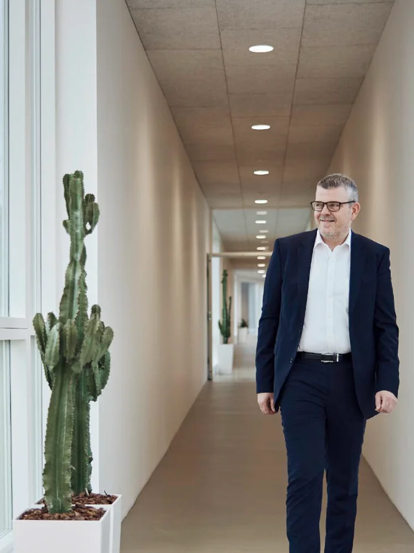

Partnering with Esbjerg on climate neutrality
1 min read
We make decisions based on what's right for our people, our customers, and society — not just short-term gains.

"Sustainability and ESG are not something added on top of the business. It is a natural extension of the values on which MacArtney was built, values that all of us have a responsibility to carry forward."Niels Peter Christensen CEO
Sustainability at MacArtney means creating value today without compromising the needs of future generations. It covers how we impact the environment, how we treat people, and how we run our business responsibly. In other words, it's not just about going green — it's about everything we do from reducing waste and protecting the environment to ensuring a safe, fair, and ethical workplace.
We also talk about ESG — which stands for Environmental, Social, and Governance. If sustainability is our direction, ESG is how we measure and show our progress. Our annual ESG report tracks key data on things like climate impact, safety, diversity, and ethics. Being transparent and data-driven keeps us accountable and helps us meet growing expectations from customers and regulators.